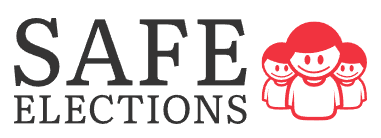

Bienvenid@.El objetivo de Safe Elections es mejorar la táctica de votación en la Institución Educativa,haciendo de las elecciones un proceso seguro,ágil y eficaz. Esta plataforma permite que todos los estudiantes puedan ejercer su derecho al voto de manera electrónica.
Leer más 𝑨𝒉𝒐𝒓𝒂 𝒕𝒊𝒆𝒏𝒆𝒔 𝒂 𝒕𝒖 𝒂𝒍𝒄𝒂𝒏𝒄𝒆 𝒍𝒂 𝒎𝒂𝒏𝒆𝒓𝒂 𝒎𝒂́𝒔 𝒇𝒂́𝒄𝒊𝒍 𝒅𝒆 𝒆𝒍𝒆𝒈𝒊𝒓 𝒂 𝒕𝒖𝒔 𝒓𝒆𝒑𝒓𝒆𝒔𝒆𝒏𝒕𝒂𝒏𝒕𝒆𝒔 𝒆𝒔𝒄𝒐𝒍𝒂𝒓𝒆𝒔